Szkolenie w Shell Business Operations Kraków
W ramach współpracy z Shell Business Operations Kraków zrealizowaliśmy autorski program szkoleniowy H-CORE Edu, oparty na trzech komplementarnych modułach.
1. Gotowość 24
Moduł obejmował podstawy działania w warunkach zakłócenia codziennego funkcjonowania, ze szczególnym uwzględnieniem komunikacji, organizacji małej grupy, wyznaczania punktów spotkań, priorytetów postępowania podczas blackoutu oraz praktycznych ćwiczeń z wykorzystaniem radii.
2. Moduł oparty na zmodyfikowanych elementach triage SALT
Ta część programu została dostosowana do potrzeb osób cywilnych i niemedycznych. Jej celem było przełożenie logiki porządkowania sytuacji, oceny priorytetów i podejmowania decyzji pod presją na prosty i użyteczny model działania.
3. STOP THE BLEED®
Praktyczny moduł poświęcony kontroli masywnego krwotoku. Uczestnicy ćwiczyli rozpoznanie krwotoku zagrażającego życiu, ucisk bezpośredni, pakowanie rany oraz użycie opaski uciskowej. Uczestnicy tej części szkolenia otrzymali oryginalne certyfikaty STOP THE BLEED®.
Moduł STOP THE BLEED® stanowił również istotne uzupełnienie części opartej na logice SALT, rozwijając praktyczne elementy life-saving treatment.
Całość została zrealizowana w formule w pełni praktycznej, bez klasycznej prezentacji multimedialnej. Uczestnicy pracowali na materiałach drukowanych oraz analogowych pomocach szkoleniowych, w oparciu o scenariusze, zadania i ćwiczenia zespołowe. Taka forma spotkała się z bardzo dobrym odbiorem — uczestnicy docenili warsztatowy charakter szkolenia, przejrzyste materiały oraz odejście od standardowej formuły opartej na slajdach.
Dziękujemy zespołowi Shell Business Operations Kraków za zaufanie i zaangażowanie.
H-CORE Edu
Autorskie szkolenia z zakresu gotowości i reagowania w sytuacjach kryzysowych.
#HCoreEdu #ShellBusinessOperations #Krakow #Gotowosc24 #SALT #StopTheBleed #Blackout
Galeria zdjęć
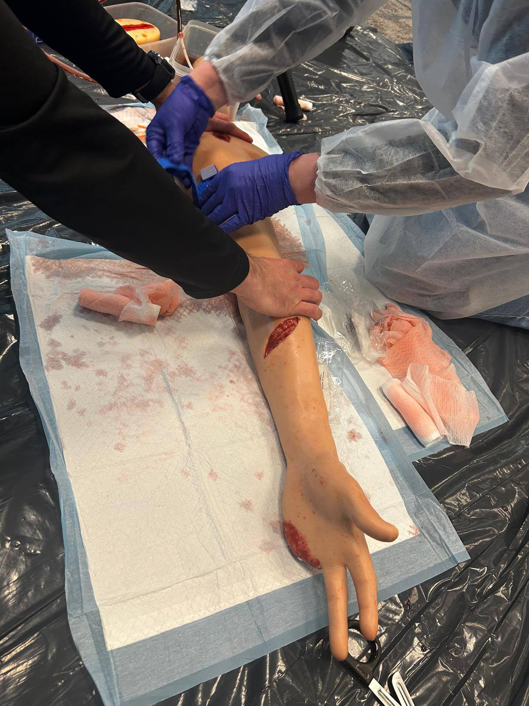
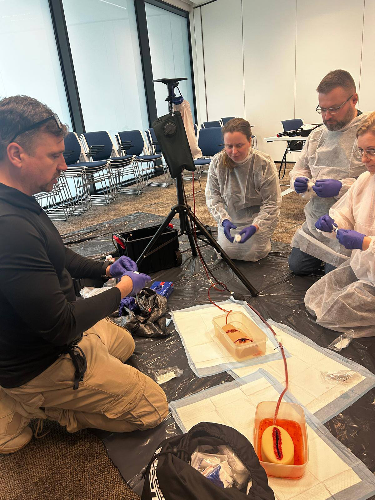
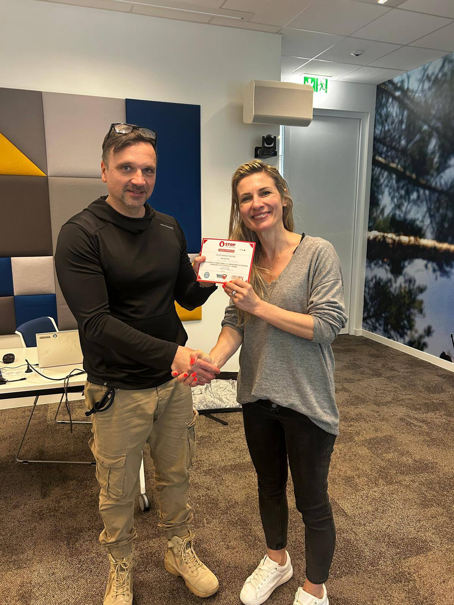
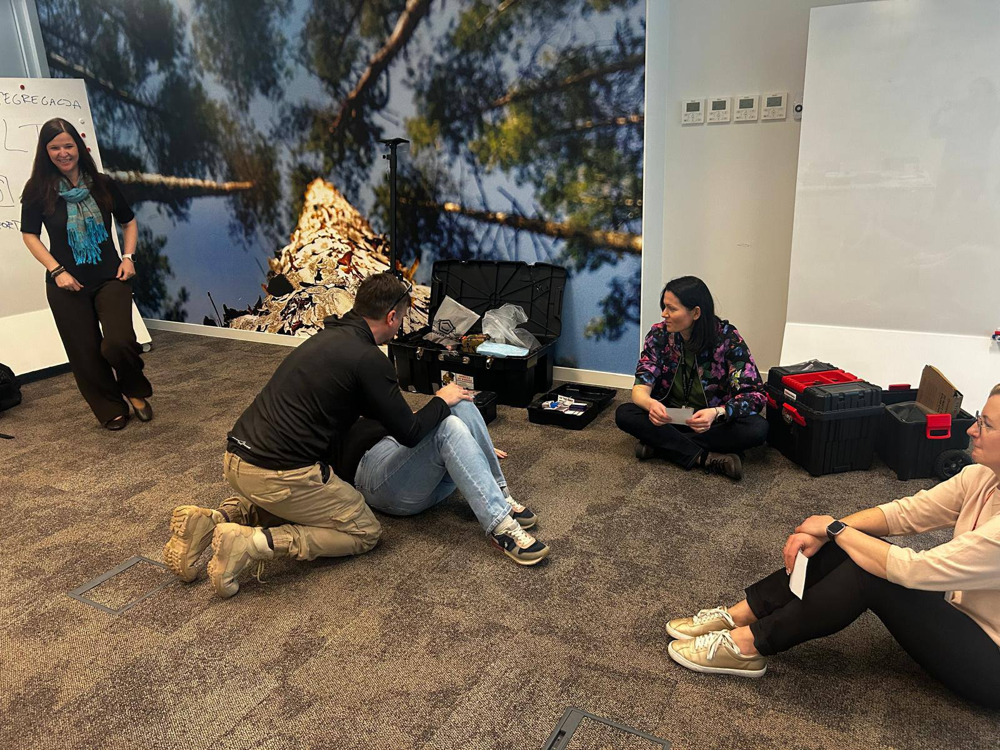
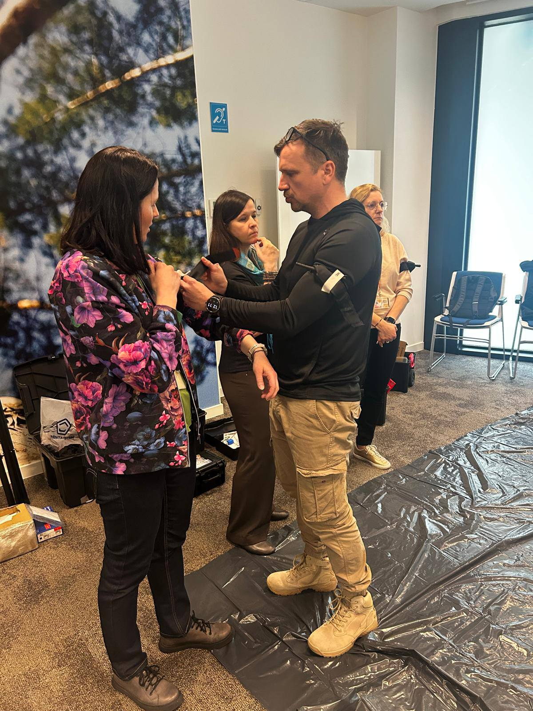
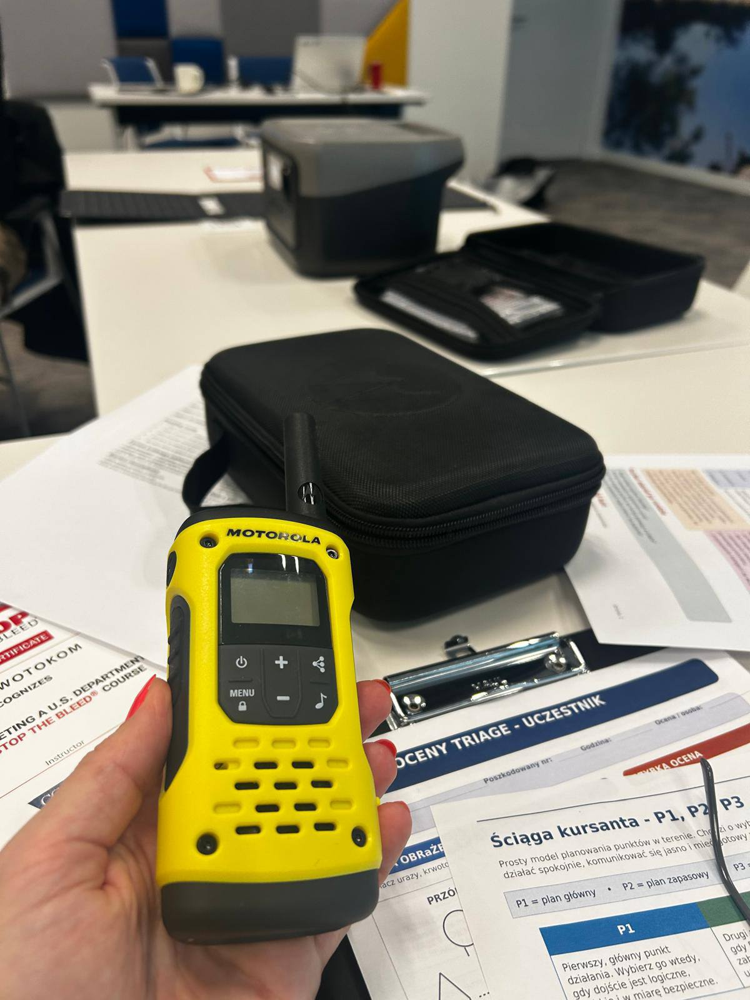
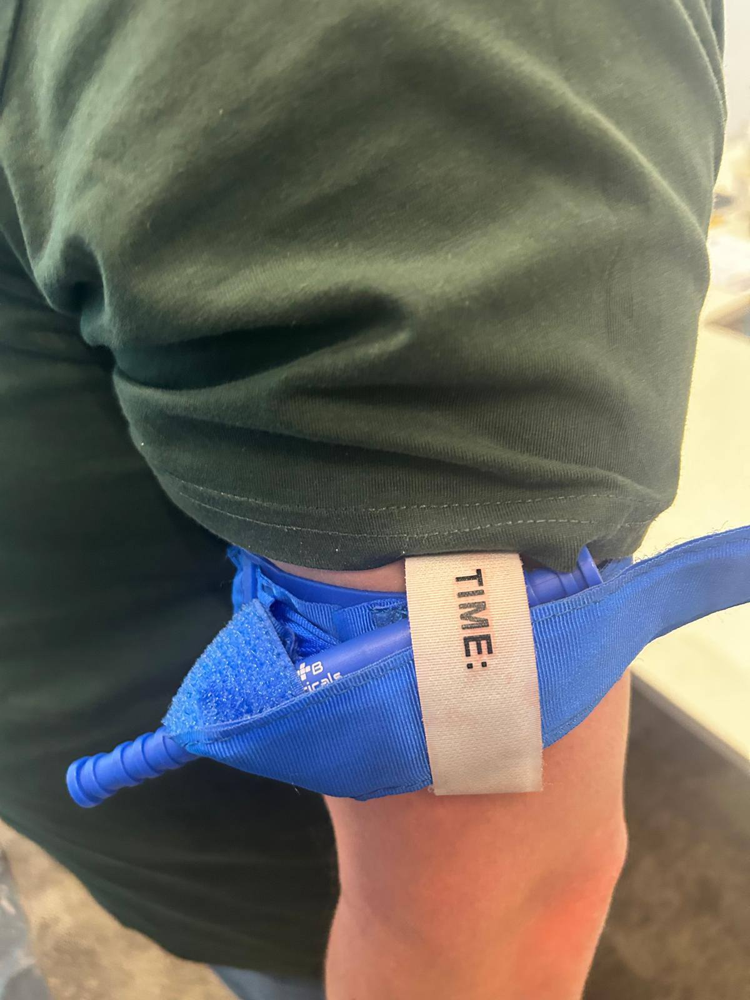
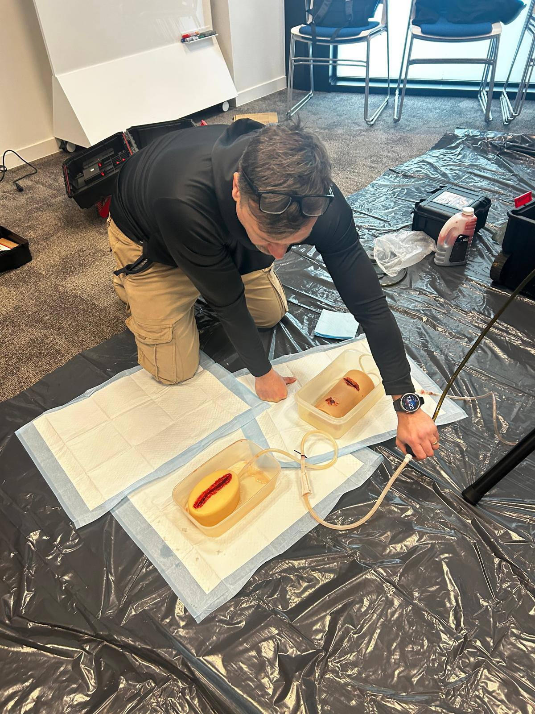
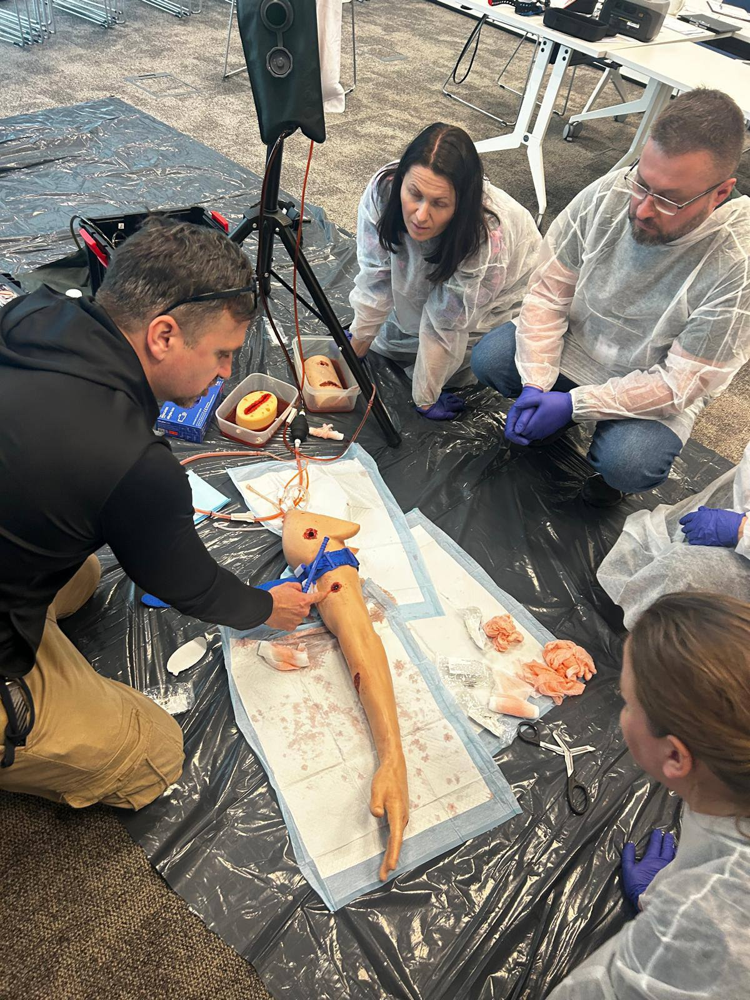
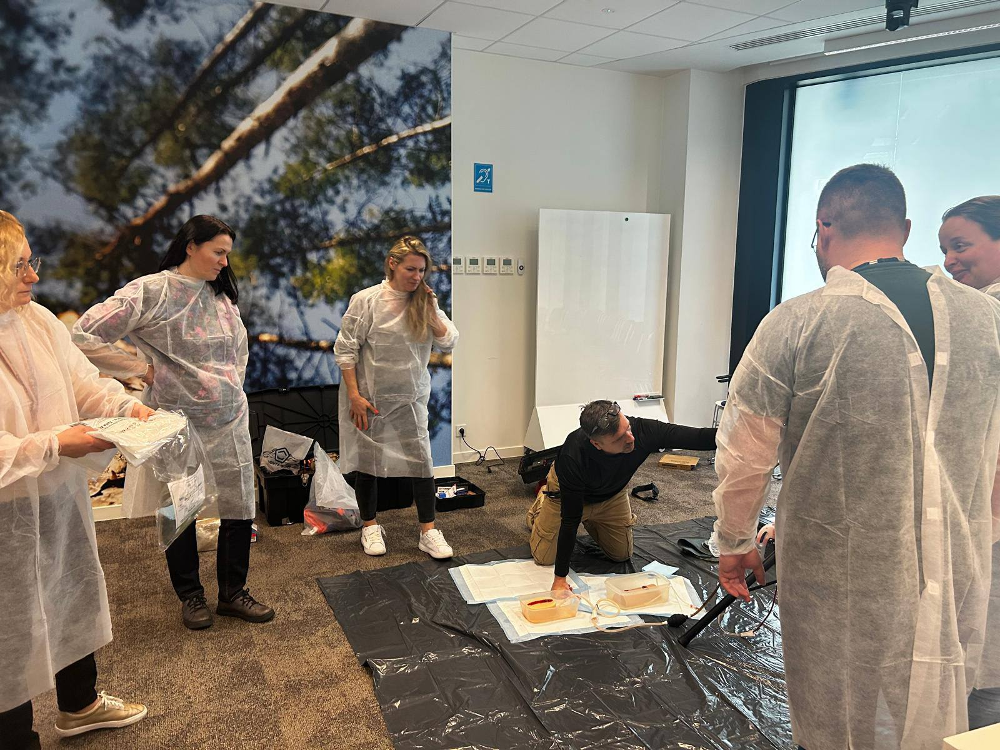
.jpg)
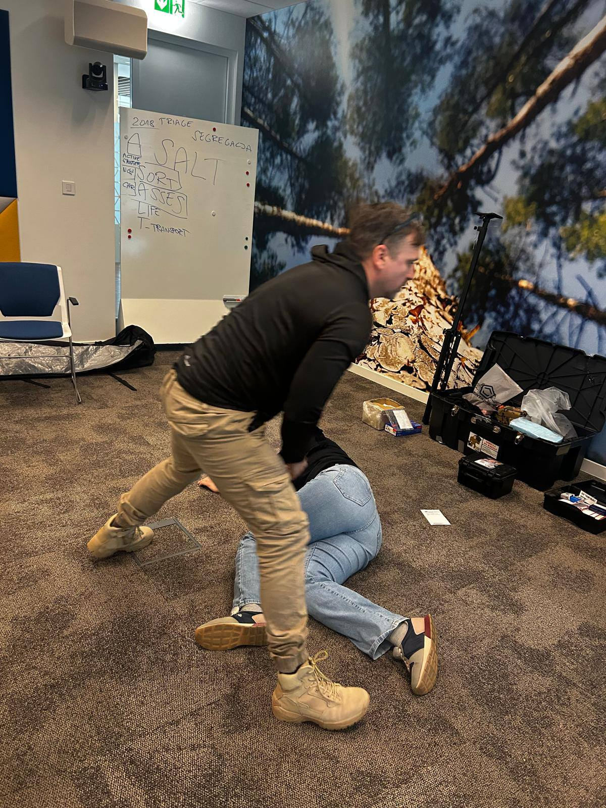
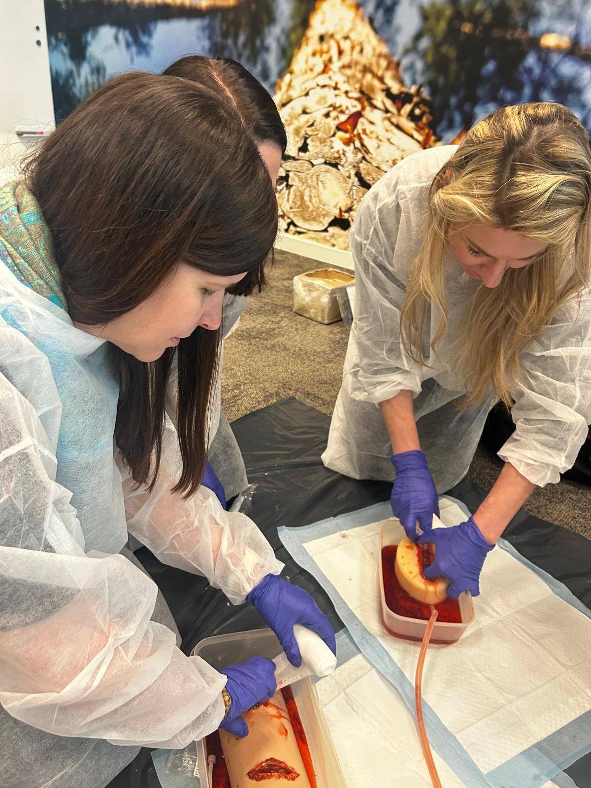